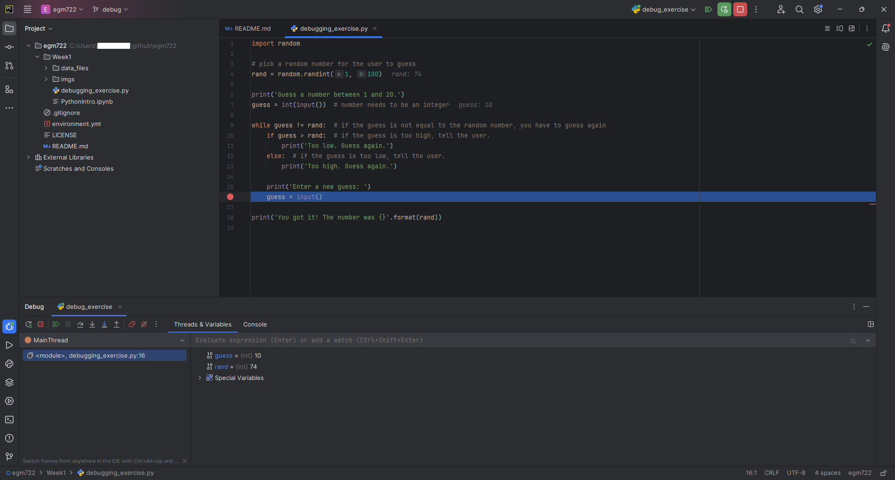

debugging exercise
Contents
debugging exercise#
Warning
Before proceeding, you should have completed all of the setup steps, including installing an IDE such as PyCharm.
If you have not completed all of the steps above, stop now and go back to finish them!
Note
The example and instructions shown here are for PyCharm Community Edition 2021.3.3 – if you are using a different IDE, such as VS Code or Spyder, the steps will be similar, broadly speaking, but they are different software packages with a different appearance and menu options.
I will do my best to provide help with other options, but I can’t promise a completely painless experience.
the script#
The goal with the debugging_exercise.py script is to have a short guessing game program. The script should
generate a random integer between 1 and 20, and at the start, the user should enter a guess by typing it into the
command prompt.
Based on the user’s input, the program should say whether the guess is higher or lower than the random number, and prompt the user to enter a new guess. This process should repeat, until the user has correctly guessed the number.
Unfortunately, as you will see, the script provided has a number of bugs, or errors, in it, that prevent it from running as expected. Our task in this exercise is to use PyCharm’s debugging tools to correct (debug) these error, so that the script functions as intended.
setup#
Before getting started with the exercise, there’s one final bit of setup needed. PyCharm provides a number of options for running scripts - the instructions below will show you how you can do this using the Run tool.
Note
Again, this assumes that you have set up PyCharm according to the instructions, including creating a new project for your EGM722 practicals.
To be able to run a script using the Run button, or to use the debugging tools, you’ll need to make sure that you’ve configured a python interpreter already, following the instructions in creating a new project or adding an interpreter.
In the upper right-hand corner of the PyCharm window, you should see this:

Click on Add Configuration… to open the Run/Debug Configurations window, then click the + icon in the
upper left to add a new configuration:

select Python:

Call this new configuration debug_exercise, and set the Script path to be the path to debugging_exercise.py
in the Week1 folder of your EGM722 repository. Finally, make sure that the Python interpreter is set to
your egm722 environment, then click OK to finish the configuration.
You should see that the buttons in the upper right of the window have changed:

running a script#
Once you have the script configured, you can press the green Run button (the triangle). When you do this, you should see that the Run Panel opens at the bottom of the window:

This is where anything printed to the screen by your script will show, including all error messages. In fact, you
should see an error message already:
Traceback (most recent call last):
File ("C:/Users/e16006469/egm722/bobtheburner/Week1/debugging_exercise.py", line 4, in <module>
rand = random.randint(1, 100)
NameError: name 'random' is not defined
Process finished with exit code 1
Note that, if the script had run successfully, you would see the following at the end:
Process finished with exit code 0
If the exit code is any other value, it means that something hasn’t gone according to plan. For more information about
python exit codes, have a look at the documentation for sys.exit()
here.
Here, we can see that the process finished with exit code 1, which indicates that the interpreter raised an Exception (an error). Now that we have confirmed that the script that’s supposed to have errors in it indeed has errors, we’ll use the debugging tools in order to fix those errors.
the error message#
First, though, let’s have another look at the error message:
Traceback (most recent call last):
File ("C:/Users/e16006469/egm722/bobtheburner/Week1/debugging_exercise.py", line 4, in <module>
rand = random.randint(1, 100)
NameError: name 'random' is not defined
Process finished with exit code 1
The Traceback tells us exactly where something went wrong - in this case, it happened in the
debugging_exercise.py script at line 4. The line:
rand = random.randint(1, 100)
Caused a NameError, because the interpreter tried to do something with an object called random, and no
such object had been defined.
Let’s open up the script and see if we can find where something went wrong:

One of the features of PyCharm and other IDEs is that they highlight syntax, which helps identify potential
issues. Here, we can see that at the same spot where the script failed, random is underlined in red. If you hover
over this with your mouse, you can see the following message:
{kind=link}
This tells us essentially the same thing as the NameError - the object called random has been used before
it was defined. The issue, in this case, is clear if we look at line 1:
# import random
The last person who worked on this script commented out the import statement, meaning that we never actually
imported the random module. Thanks a lot, bob.
If you delete the # and the space following it:
import random
You should see that the red underline at line 4 goes away - we should no longer see a NameError caused by the issue at line 4. Save the script (CTRL + S) before moving on.
commiting changes#
Before we run the script again, notice that the name of the script in the tab has turned blue:
{kind=link}
This indicates that we have changed the file, but not yet commited it using git. To do this, there are a number
of tools at our disposal; we’ll focus on using GitHub Desktop for right now.
With GitHub Desktop open, you should see the following:

On the left, we see that there’s 1 file that has changed (Week1\debugging_exercise.py), and in the main panel
we see what that change is: we’ve deleted the # from line 1.
In the lower left, you can see a place to enter a new commit message, including a longer description. This is where you identify what change(s) you’ve made to your file(s), and (optionally) explain why in a longer message.
For the commit message, enter “fixed import statement”, and leave the description blank for now. Press the blue Commit to debug button to commit (save) the changes to the file, then go back to PyCharm.
You should see that the script tab has changed from blue to white, indicating that there are no un-committed changes to the file:
{kind=link}
the debugging tools#
Once you’ve committed this fix, run the script again. You should see that there’s now an error in a different spot:

Traceback (most recent call last):
File ("C:/Users/e16006469/egm722/bobtheburner/Week1/debugging_exercise.py", line 10, in <module>
if guess > rand: # if the guess is too high, tell the user.
TypeError: '>' not supported between instances of 'str' and 'int'
Process finished with exit code 1
This time, the line appears at line 10 of the code, inside of the while loop. But, it made it through at least one
iteration of the while loop, because we were able to enter a second guess, which happens at line 16.
So, let’s tell PyCharm to stop the script at that location. To do this, click on the left-hand side of the code panel, just to the right of the “16” at line 16. You should see a red dot appear:

This is a breakpoint - a spot for the interpreter to pause while we inspect what’s going on in the script. Run
the script again, but this time press the green debugging button (it looks like a small bug).
This time, instead of the Run panel, you should see that PyCharm has opened the Debug Panel. After entering your guess in the console, you should see the Debugger showing in the lower half of the window:
{kind=link}
At the moment, the script has stopped running - it’s waiting for us to tell it to do something. Have a look at this
part of the Debugging Panel:

From left to right, the buttons here are:
Show Execution Point - this highlights where in the code you currently are
Step Over - this runs the current line without stepping into any method or function calls, moving right to the next line in the current script
Step Into - this will actually step into any method or function calls, allowing you to examine what’s happening inside of those functions
Step Into My Code - this works the same as Step Into, but it won’t step into methods/functions that have been imported
Force Step Into (currently grayed out) - steps into the method/function even if it’s skipped by Step Into
Step Out - steps out of the current method/function and back to where the method/function was called.
Run to Cursor - will run the program until it reaches where the cursor is currently placed
Evaluate Expression - you can use this to calculate values of expressions or code fragments, using the variables and methods that have currently been declared.
We won’t get into using all of these during this exercise, but if you’re interested in learning more about these tools and how to use them, check out the PyCharm online manual: https://www.jetbrains.com/help/pycharm/debugging-code.html.
Press the Step Over button, then switch back to the Console view. You should see a prompt to enter a new guess:

When you enter a new guess this time, you should see the Error message again, and the line where the Error
occurred should be highlighted:

Now, switch back to the Debugger:

Note that our list of variables down below, guess has a type of str, while rand has a type of
int. This, combined with the Error message:
TypeError: '>' not supported between instances of 'str' and 'int'
tells us what the problem is. The output of input()
(documentation) is a str, which means that if we
want to treat it like a number, we need to tell python to do so.
To fix this error, we can use int() to try to convert what the user types from a str to an int:
guess = int(input())
Note
Remember: this will still raise an error if the user types anything other than a number, because int()
expects that the argument provided to it is numeric.
Once you’ve fixed this error, save the script (CTRL + S), and press the red Stop button to stop the debugger.
semantic errors#
The errors that we’ve seen so far (NameError, TypeError) are examples of Runtime Errors - errors that, when the python interpreter finds them, cause it to raise an Exception that stops the program.
The other errors in the script are semantic errors - that is, the code is technically correct, but something is not quite right. These are usually the hardest errors to find and fix, because what is wrong isn’t immediately obvious.
By using the debugging tools available in an IDE like PyCharm, we can stop the code and have a closer look, which should help us narrow down what’s wrong.
Run the debugger again, and pay attention to the value of the number you’re meant to guess (rand), as well as the
response when you enter your guess:

In the window below, I’ve entered a guess of 10, and the response from the program
is 'Too high. Guess again.'. Now, this should mean that guess > rand, but have a look at the values displayed
in the debugger:
{kind=link}
Here, we see that guess has a value of 10, as expected, but rand has a value of 53. So, there are two
problems here.
First, the instructions to the user were to guess a number between 1 and 20, and 53 is decidedly outside of that range. Looking at line 4:
rand = random.randint(1, 100)
We can see that we’re getting a random integer in the range 1 to 100, rather than the expected 1 to 20. Fortunately, that’s easy enough to fix.
Second, 10 < 53, but the program has told us the opposite:
if guess > rand: # if the guess is too high, tell the user
print('Too low. Guess again.')
else: # if the guess is too low, tell the user
print('Too high. Guess again.')
Based on the comments, and the actual code (if guess > rand:), these print messages need to be reversed:
if guess > rand: # if the guess is too high, tell the user
print('Too high. Guess again.')
else: # if the guess is too low, tell the user
print('Too low. Guess again.')
Fix these errors in the script, save it (CTRL + S), then try to Run the script again. Does it run as expected, with no further bugs?
finishing up#
Once you’ve identified and fixed the bugs, head back to GitHub Desktop. You should see the changes you’ve made have been tracked:

This time, because we’ve made a number of changes, we’ll write a longer commit description, at least for practice.
Add a brief commit message, such as “fix guessing game script”, then add a longer description of the changes:

Finally, press the Commit to debug button to commit the changes.
next steps#
As some additional practice, see if you can add a new feature to the program that keeps track of the number of guesses the user has made, and prints out the total number of guesses once the user has correctly guessed the number.
Once you’ve made these changes, and are satisfied that they’re working properly, remember to use GitHub Desktop to commit the changes.